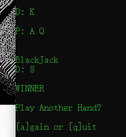

Addendum:
Soft 17 means dealer stands on A[6] - where 6 is the final value of the dealer's other 4 cards.
This means the dealer doesn't get the chance to increase their hand to 21, reducing house edge by ~0.2%.
I have not played my game enough to notice what
I actually implemented, and tbh, I've forgotten my intended implemenation
(probably Hard 17 but idk lol)
Addendum 2:
It's stand on Soft 17...
~0.2%, nice

Links to Resources:
Reference Manual Ascii Chart